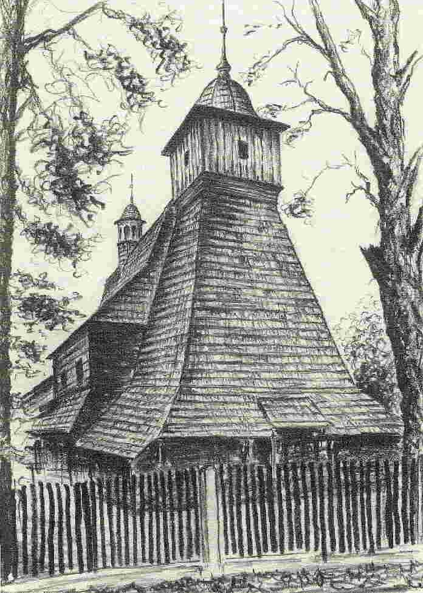
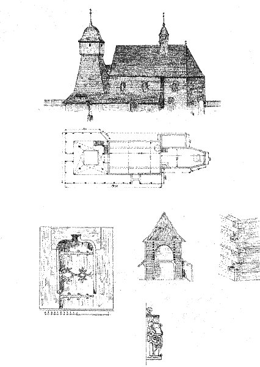

Život přináší bohužel i smutné okamžiky, právě v době velikonočního veselí nás zastihla tato zpráva:
|
| O s t r a v a - Dřevěný
kostel svaté Kateřiny ze 16. století v Ostravě-Hrabové lehl popelem.
Pro místní obyvatele je to velké neštěstí. Když po třetí ráno přijeli
první hasiči, byl už celý kostel v plamenech. Z národní kulturní památky
se nepodařilo zachránit téměř nic. "Je to jako kdyby vám odešel blízký
člověk," svěřila se v slzách jedna z místních obyvatelek. Národní kulturní památka začala hořet podle svědků ve tři hodiny ráno. I když během několika minut přijely tři profesionální a tři dobrovolné hasičské jednotky, na místě zůstalo jen velké spáleniště a trosky. Podle hasičů se nedalo nic dělat, přestože před rokem zde měli cvičení. "Jakmile chytí jeden trám, padne kostel celý," říkali hasiči, aniž tušili, že se něco takového opravdu stane. "To cvičení to určitě přivolalo," tvrdí lidé z okolí. Příčinu požáru zatím nikdo nezná. Vyšetřovaní navíc bude velmi obtížné, protože kostelík, který měla čtvrť Hrabová ve svém znaku a byl druhou nejstarší církevní stavbou v Ostravě, shořel do základů. Kněz si po uhašení požáru mohl odnést jen knihy a kalich, které "přežily" neštěstí v sakristii. Církev už začala uvažovat o stavbě kopie. Začínají se shánět výkresy, lidé se už nabízeli, že finančně přispějí na novou stavbu. Kostel byl stále využíván, pravidelně se v něm konaly mše, svatby, křty i pohřby. (MF Dnes, 2.4.2002) |
Myslím, že nejsem sám, koho tato zpráva šokovala.
Sám jsem jí nevěřil až do okamžiku, kdy jsem trosky kostela spatřil na
vlastní oči, do poslední chvíle jsem tak nějak doufal, že to není pravda,
že případný oheň stavbu kostela "jen" poškodil. Bohužel to pravda
byla. Já i mnoho lidí z mého okolí neseme ztrátu kostela velmi bolestně.
Má rodina i já sám mám na něj spoustu živých vzpomínek, mí prarodiče i
rodiče v něm hráli a zpívali o poutích, často byl cílem našich vycházek
i výletů, ať již v minulosti "Komárkem" - starou tramvají, která
měla dříve zastávku jen pár kroků od kostela, nebo později na kole, vždy,
když jsme se vraceli do Ostravy po Místecké, zaletěl alespoň na chvíli
náš zrak k vížce kostela, skryté mezi vzrostlými stromy stranou od cesty.
Stál tam vždy důstojně a střežil mnohá tajemství, jichž byl za ta staletí
němým svědkem. Svět kolem něj se měnil, ale on zůstával stejný. Teď je
po něm velmi prázdné a podivné místo, nejen v Hrabové, ale i v srdcích
všech, kdo jej znali. |
|  | |
|
Pohled na kostel od západu,
snímek z léta roku 1997.
|
Kresba Boris Zvada (viz
poznámka).
|
|
Pohled na kostel od západu,
snímek z 2.4. roku 2002.
|
Vyšetřování příčin požáru se ubírá zatím třemi směry - úmyslné zapálení, vada elektroinstalace a zapomenutá svíčka po bohoslužbě. K těmto příčinám mohu poznamenati jen pár připomínek:
Určitým řešením pro obdobné stavby by jistě byla EPS - požární signalizace. Vždyť ke kostelu dorazili nejprve policisté, které přivolala EZS - elektronické zabezpečení objektu proti vloupání (pravděpodobně prohořel některý z kabelů zabezpečení nebo bylo plameny či pohybem teplého vzduchu v interiéru aktivováno infrapasivní čidlo). Je velmi smutné, že na instalaci podobných zařízení se nedostávají peníze (církev je objektivně nemá, a stát nedá). Mnohem důležitější a jistější by ale byl hasící systém, používaný dnes již běžně například ve věžích a půdách významných staveb nebo napuštění dřevěné konstrukce látkou, která by zabránila šíření plamene. V Hrabové je na to již bohužel pozdě, přesto ale v okolí Ostravy zbývá čtrnáct unikátních dřevěných kostelů (nejvíce z celé republiky, na zbytku jejího území byste mohli napočítat tak čtyři až pět podobných staveb…). Těžko se totiž v případě jejich zániku před budoucími generacemi ospravedlníme tím, že jsme neměli peníze. Ty nebyly nikdy a přesto se tyto stavby obětavostí lidí dochovaly po staletí. Dnes se nemá kdo obětovat?… V současné době probíhají intenzivní práce na obnově kostela v původní podobě. Je zachováno velké množství stavební i fotografické dokumentace a především je silná vůle na straně obce i církve. Jiné cesty není, kostel se bude muset postavit znovu. Bude to ale už navždy jen více či méně věrná kulisa - model 1:1 něčeho, co se nedá vrátit zpátky. Do případné novostavby bude možné zakomponovat jen pár méně ohořelých stavebních prvků z původního kostela. Možná to některým bude stačit - budou si moci říct - "tak takhle ten kostel nějak vypadal". Ale ti, kdo jej znali opravdu už ví, že se nikdy nevrátí. A to je ztráta velmi bolestná, pro ně samé i pro Ostravu. Vždyť tento kostel byl v celém ostravském regionu JEDINOU skutečnou památkou. |
 |
|
Fotografie kostela po opravě
roku 2000 a 2001, zřetelně je vidět nová krytina věže a ochozu. |
|

|
|
| Nákres kostela (V. Zlý,
1936). |
Oltář a obraz svaté Kateřiny. |
Začíná jaro, přesto
zde květy působí až násilně nepatřičně. Z celé stavby zbylo po požáru
jen velmi málo - část zakristie a severovýchodní stěna presbytáře. Z věže
a lodi zbyla jen hromada ohořelých trámů v popředí, shořely varhany (1948),
rozbit byl i 400kg těžký barokní zvon z roku 1660. Názor místních je jednoznačný
- "no co!, musí se postavit znovu". Při fotografování tohoto
snímku jsem vyslechl i rozhovor matky s malou holčičkou: "maminko,
a proč ten kostelíček shořel??? A maminko, kdo ho teď znova postaví?".
Znáte někdo odpověď? |
| To, co zbylo,
téměř nestojí za řeč. Zakristie je ve srovnání se zbytkem stavby téměř
bezcenná, neboť je její nejmladší součástí (počátkem dvacátého století
byla podstatně rozšířena a přistavěna). Přesto jsou i zbytky stavby cenné
pro případnou stavbu repliky, vypovídají o použitých materiálech i technologiích
(tvar a typ čepování ve spojích trámů, dřevěné žlaby okapů apod.). |
|
Jeden z nosných trámů konstrukce věže, poničený na povrchu ohněm. Při stáří kostela přes 450 let rostl strom, ze kterého je tento trám vyřezán před rokem 1500. Dokážete si v mysli spočítat, co všechno pamatoval? Kolik válek a pohrom přežil, kolik generací lidí se u něj vystřídalo? To všechno skončilo v jednu velikonoční noc. Opravdu skončilo? |
Církev zprovoznila konto na
obnovu kostela sv. Kateřiny v Ostravě-Hrabové. Peníze je možné posílat
na účet u České spořitelny 1684206329/0800, variabilní symbol je 1564
(symbolicky předpokládaný rok vzniku kostela). |
V posledním červnovém
týdnu roku 2003 započala stavba repliky kostela. Podrobnosti o ní naleznete
na následující stránce (průběh obnovy v roce 2003),
na další pak průběh obnovy, předání kostela, vysvěcení a zajímavosti v
roce 2004. |
Podrobný stavební popis kostela i jeho historii naleznete na další stránce zde: Kresba (autor Boris Zvada) a fotografie kostela po opravě byly převzaty z knihy Jaromíra Poláška - Dřevěné kostely a kaple Moravy a Slezska, vydané nakladatelstvím Agave Český Těšín v roce 2001. Fotografie oltáře je z publikace Dřevěná krása (vydal Montanex, 2001), první fotografie na stránce pochází ze sborníku Dřevěné kostely v Beskydech a Pobeskydí (vydalo Muzeum Beskyd ve Frýdku - Místku, 1994), nákres pak se sborníku Sedm století obce Hrabová (vydáno Úřadem městského obvodu Hrabová, 1997). Fotografie hasičů ČTK, fotografie požáru a staré pohlednice ÚMOb Hrabová, ostatní fotografie a text autor stránek. |
Zpět
na předchozí - nebo Stránky
Ing. Petra Bernata (varhany, diagnostika, zajímavosti). Použijte,
pokud jste sem vstoupili odkazem z jiného webu... |